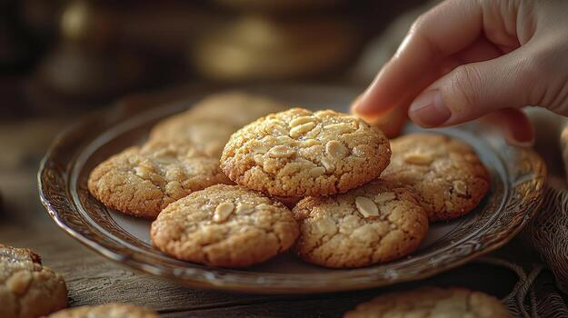

Odin Recipes | Simple Oatmeal Cookies

Description
Though plain, these oatmeal cookies are a good base for a custom recipe — try adding raisins,
dried berries, nuts, or chocolate chips. Quick-cooking oats give the cookies a softer texture,
and can be swapped with old-fashioned oats for a chewier result.
Ingredients
- 2 eggs
- 2 cups all-purpose flour
- 1 cup softened unsalted butter
- 1 cup white sugar
- 1 cup brown sugar
- 3 cups quick-cooking oats
- 1 1/2 tsp ground cinnamon
- 1 tsp baking soda
- 1 tsp salt
- 1 tsp vanilla extract
Steps
- Mix flour, cinnamon, baking soda, and salt together in a bowl.
- Beat butter and sugar in a separate bowl until creamy.
- Add eggs and vanilla in the butter mixture. Beat the eggs in one at a time.
- Slowly add in the dry mixture until well combined. Add the oats.
- Cover the dough and let it rest in the refrigerator for at least 1 hour.
- Preheat the oven to 375°F (190°C).
In two small bowls, prepare plain water and a little bit of sugar.
- Roll the chilled dough into small balls and place them on baking sheets (greased or sprayed).
Dip a fork into water and then in sugar, and use it to flatten the cookies.
- Bake for 8—10 minutes or until the centers are nearly set.
- Let the cookies cool before eating.